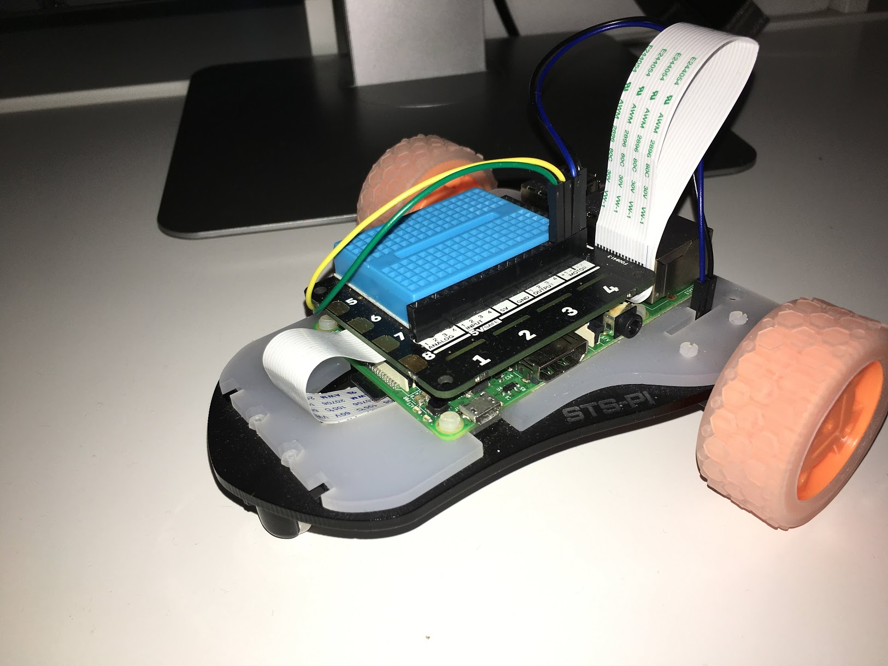
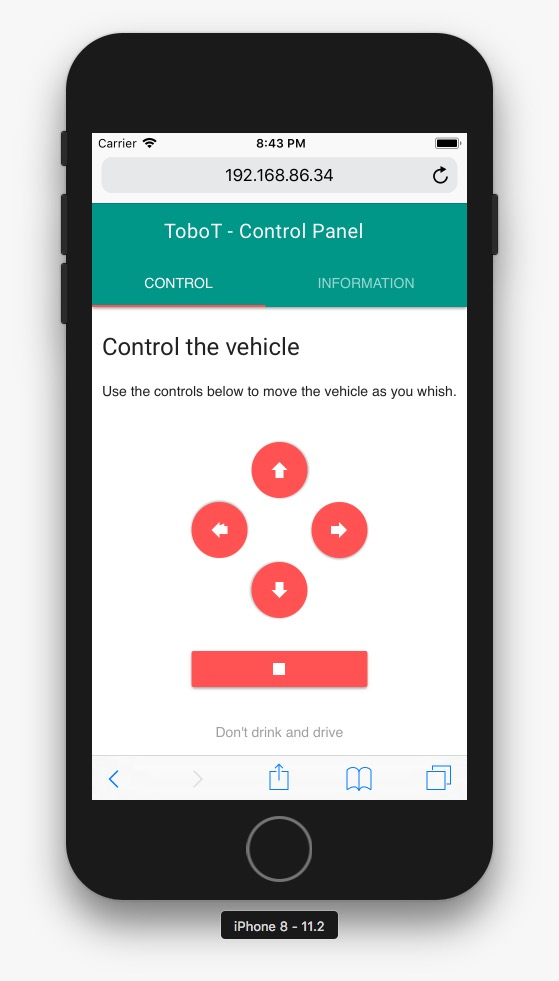
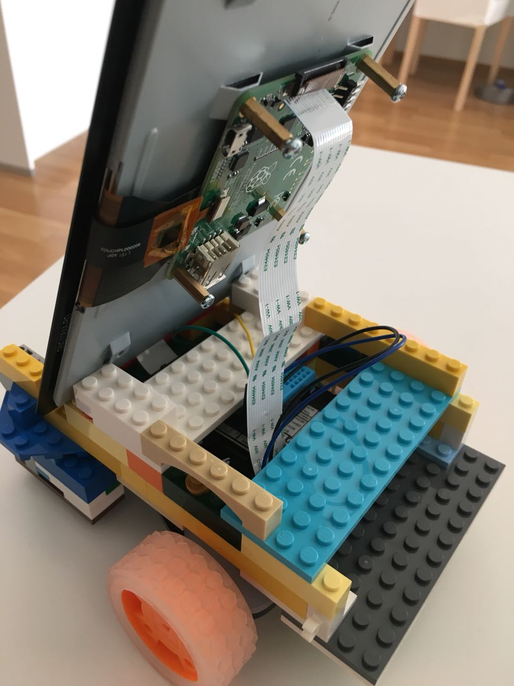

Der Anfang von ToboT mit Android Things
Wie schon öfters hier im Blog erwähnt beschäftige ich mich aus Spaß an der Freunde in meiner Freizeit mit Googles Android Things, also der Variante des mobilen Betriebssystems für Internet-of-Things Geräte. So basiert zum Beispiel mein Firebase Pager ebenfalls auf einer Android Things Developer Preview.
Da es aber doch irgendwann eintönig wird immer nur nicht greifbare Software zu schreiben, werkle ich gerade an einem kleinen Vehicle welches auf dem Pimoroni STS-Pi Kit als auch einem Raspberry Pi mit aufgesteckten Explorer HAT aus dem gleichen Hause basiert. Natürlich kommt hier nicht das “empfohlene” Raspbian zum Einsatz sondern wie sicherlich schon vermutet ebenfalls Android Things.
Getauft hab ich den kleinen Kerl “ToboT” (Github) – da dieser noch viel mehr werden soll als nur ein ferngesteuertes Irgendetwas.

Dieses Projekt hat keine feste Roadmap als auch keine feste Zeiten, es soll mir einfach wieder meine fast Lieblingssprache Java näher bringen und vor allem, es soll einfach ein entspanntes Hacken in der Freizeit sein – ach wie schön.
Bereits erfolgte Schritte
Erstellen eines einfachen Managers zur Ansteuerung der Motoren
Als ich anfing waren mir Begriffe wie GPIO, oder PWM völlig unbekannt und bescherten mir doch die ein oder anderen Kopfschmerzen. Wohl deswegen, war ich umso stolzer als ich einen kleinen, simplen, jedoch ausreichenden Manager (Github) geschrieben habe, der durch Ansteuerung der GPIO-Pins des Explorer HATs mein Vehikel vor, zurück, links, rechts und – lesson Learned – auch wieder anhalten lässt. Yeah!
Da ich absolut keine Erfahrungswerte hatte, habe ich mich an der Python Implementierung eines solchen Helferlein von einem Blogbeitrag des Authors Francesco Azzola orientiert.
Als besonders hilfreich um zu wissen was ich überhaupt ansteuern muss, empfand ich eine Schemazeichnung, in einem Erklärbeitrag von Microsoft rund um deren IoT Betriebssystem, um mit den vielen verschiedenen Namen der Pins auf einem Raspberry Pi klar zu kommen.
Um weitere hardwarenäheren Interaktionsmöglichkeiten, wie die kapazitiven Knöpfe des Explorer HATs, mit einbeziehen zu können konnte ich mich an den wirklich massenhaft vorhandenen offiziellen Beispielsprojekten von Android Things auf Github orientieren. Dort ist wirklich für jeden naheliegenden Anwendungsfall etwas dabei.

Fernsteuerung via integrierten Webserver
Ich experimentierte erst mit der wirklich toll funktionierenden Nearby API von Google um mit einem anderen Device mein ToboT fernsteuern zu können. Dies fühlte sich dennoch nicht wirklich dem Anwendungsszenario passend an. Da ich vor allem erstmal die Komplexität niedrig halten wollte als auch es möglich einfach für mich gestallten wollte weitere Software andocken zu können habe ich mich dann dagegen entschieden.
Nach vielen hilfreichen Tipps aus der Android Things Google Plus Community habe ich mich für einen integrierten Webserver entschieden. Hierbei viel schlussendlich meine Wahl auf den nanoHttpd. Dieser ultrakompakte Webserver lässt sich einfach als Gradle Dependency einfügen und ist mit wenigen Zeilen Quelltext auch einsatzbereit.
Was hierbei auf den ersten Blick etwas beschränkend wirkt ist, dass man kein “Directory served” sondern immer nur auf einem Request arbeitet. Man also selber eventuell verschiedene Dateien je nach Request vorbereiten ausspielen muss. Dafür lässt es den Raspberry Pi einfach vollkommen kalt – im wahrsten Sinn des Wortes.
Da ich kein Webentwickler bin und auch nun wirklich keiner werden möchte habe ich mich als Oberflächenhelferlein für die Webseite, welche als universelle Fernbedienung dienen soll, für das “Material Design Lite” entschieden. Einfache, responsive Oberflächenelemente im der Material Design Gestaltungssprache.

Geplante, weitere Schritte
Fernsteuerung mittels Firebase
Da ich mit meinem Firebase Pager bereits gemerkt habe, wie verlockend einfach Firebase Realtime Database (FRD) als auch Firebase Cloud Messaging (FCM) in Applikationen integriert werden können möchte ich dieses Feature natürlich auch für ToboT nutzen. Wenn also ich nun das Vehikel beispielsweise mittels Update-Listender auf einer FRD fernsteuern lasse, kann ich das Gerät auch theoretisch einfach wieder zum Ausgangspunkt zurückfahren lassen.
Ob FCM auch genügend Realtime wäre müsste man ausprobieren – aber hey, experimentieren macht doch Spaß!
Objekterkennung
Dieser Schritt soll der Anfang sein, ToboT autonom fahren zu lassen – in diesem Fall zu mindestens gegen nichts im Weg stehendes fahren zu lassen. Hierfür ist bereits ein Pi Camera Kit verbaut nur noch nicht wirklich angebunden. Laut den Google Computing Platform Regeln darf ich als Deutscher leider diesen Service nicht als Privatperson nutzen. :'(.
Hierbei könnten dann die Cognitive Services von Microsoft etwaig eine Alternative sein. Falls jemand zu dieser Thematik mehr oder anderes Wissen hat, bitte via Twitter zu @tobonaut melden!
Dem Vehicle ein Gesicht verpassen
Android Things App sind in vielerlei Hinsicht normale Android Apps. Somit können diese auch eine native Oberfläche anzeigen. All dies ist relativ problemlos auch inklusive berührungsempfindlicher Steuern mittels Touchscreen lösbar. Auf diesem Display soll irgendwann Informationen rund um den Zustand des ToboT dargestellt werden. Idealerweise als illustriertes paar Augen welches beispielsweise durch den oben genannten Punkt “Objekterkennung” den Benutzer erkennt, sich freu (Änderung der Augenanimation) und sich zu diesem hinbewegt.
und noch so viel mehr …
Wenn das Hacken an Freizeitprojekten Spaß macht, gibt es wohl wirklich einfach keine Grenzen. 🙂
Rückschläge
LEGO Gehäuse ist zu schwer und zu instabil
Um neben dem STS-Pi Kit auch noch ein Display und mehrer Akkupackete zu beherbergen habe ich mich an einem aus LEGO Bausteinen bestehendes Gehäuse versucht. Leider musste ich erstens feststellen, dass man bei LEGO nahezu keine “nur Steineboxen” mehr kaufen kann – wer will denn bitte Star Wars wenn man einfach 1000 Platten, Steine und Verbinder haben kann!
Andererseits es sich nicht wirklich passend an das STS-Kit anbauen lässt damit es das Gewicht mit genügend struktureller Integrität halten kann.
Sehr schade. Hier muss wohl dich wieder der 3D-Drucker ran.

Es werden noch etliche folgen …
… da bin ich mir sicher – genau so wie auch noch viele glückliche, stolze und lustige Abenteuer bei diesem Projekt auf mich warten
Danke!
Merci an all die Leute die mir, trotz das ich blutiger Anfänger war und auch noch bin mir geholfen haben mit den noch so einfachsten Dingen. Merci an die super Google Plus Community (englischsprachig) von Android Things, merci an die beiden deutschen Googler Tim Messerschmidt und Dirk Primbs die mir wieder meinen Spirit am Development zurückgebracht haben als auch tolle Talks (z.B. zu Flutter) halten.
PS:
Falls irgendwer von euch eine offizielle Quelle oder Shop für Merci rund um Android Things und Flutter kennt, bitte melden. Da ist noch blankes Alu auf meinem MacBook sichtbar. xD
Zurück